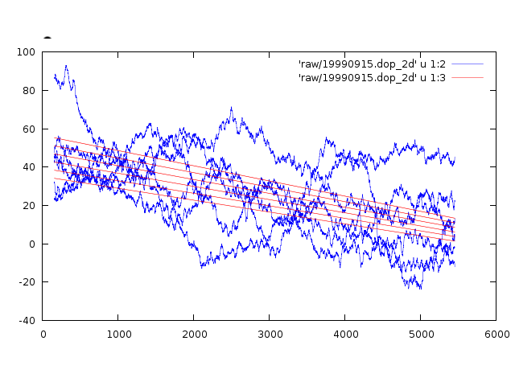

ANSI-C programs: doppler_2d.c
NAME
doppler_2d- Calculate
Doppler centroid as a function of slant range and azimuth
position using line to line cross-correlation
measurements of SAR raw data (IQ ADC format:).
SYNOPSIS
doppler_2d <SAR_par> <PROC_par>
<signal_data> <dop2d> [loff] [blsz] [nbl]
[a2_flg][b0_flg]
[b1_flg][c0_flg]
[ambig_flag] [namb]
| <SAR_par> | (input) SAR sensor parameter file |
| <PROC_par> | (input) MSP processing parameter File |
| <signal_data> | (input) Uncompressed SAR raw data (IQ data) |
| <dop2d> | (output) Doppler centroid as a function of range for each block |
| [loff] | number of lines offset (enter - for default=parameter file value) |
| [blsz] |
block size lines (enter -
for default = 2048) |
| [nbl] |
number of blocks (enter -
for default) |
| a2_flg |
fit a2 for second
derivative of the Doppler centroid w.r.t.range (Hz/m/m)
(default=0: no 1: yes) |
| b0_flg |
fit b0 for first
derivative of the Doppler centroid w.r.t. along-track
time (Hz/sec) (0: no default=1: yes) |
| b1_flg |
fit b1 for along-track
rate of the change in slope of Doppler w.r.t. range
(Hz/sec/m) (0: no default=1: yes) |
| c0_flg |
fit c0 for second
derivative of the Doppler centroid w.r.t. along-track time
(Hz/sec/sec) (default=0: no 1: yes) |
| [ambig_flag] | Global Doppler ambiguity resolution flag |
| 0 = use unambiguous Doppler Ambiguity Resolver (DAR) estimate (default) | |
| 1 = command line entry for the Doppler ambiguity number | |
| [namb] | user defined number of Doppler ambiguities to add to the Doppler function |
EXAMPLES
doppler_2d RSAT_5011.par
p5011.slc.par 5011.raw 5011.dop2d 0 2048
Analyze the data set 5011.raw using a blocksize of 2048
echoes, starting from the line offset given in the processing
parameter file. Default Doppler centroid parameters are estimated
from the raw data.
DESCRIPTION
The correlation algorithm used in Doppler averages the complex
correlatation between adjacent echoes for each range bin. (see
MSP documentation for doppler). The
resultant estimates of the Doppler centroid are wrapped
modulo the pulse repetition frequency. Doppler ambiguity is
equivalent to a shift of the Doppler centroid by the pulse
repetition frequency (Hz). For the 1-D case, where the Doppler
centroid is a function of range alone, the unwrapping is
performed by looking at the difference in Doppler centroid for
adjacent range bins and adding or subtracting a multiple of
the PRF such that the difference is less than PRF/2.
Sensors such as Radarsat-1 that are not yaw steered can exhibit
doppler variations of 20 Hz/sec along-track. The Doppler centroid
model must then be extended to include this along-track variation
if multiple raw data frames are to be processed. This
extended parametric model for fd
is a function both of slant-range r relative to center
swath and the along-track time t
relative to the center of the raw data set.
fd(r, t) = a0 +
b0*t + c0*t**2 + (a1 + b1*t)r + a2*r**2
(1)
The range used in equation 1 is relative to the center of the
raw data swath. The time argument t is relative to the center
time of the entire raw data set.
The programs doppler and doppler_real estimate parameters parameters
a0, a1, and a2 only.
For the 2d implemnation that includes the along-track variation in Doppler centroid we apply the line-to line correlation algorithm for a set of along-track blocks . This yeilds the ambiguous centroid on a 2-D array of points as a function of relative slant range and time. This array of measurements is unwrapped in 2-D by comparision with a parameterized set of Doppler model functions and the model with the least error is used to unwrap the centroid estimates. The unwrapped Doppler centroid estimates are then used to determine the 2-D model parameters a0, a1, a2, b0 and b1 and the c0 by performing a least-squares fit.
The global Doppler ambiguity can either be set to a given
number, or from the unambiguous Doppler centroid estimated
by dop_ambig (recommmend). The
user can also optionally select which of the parameters a1, b0,
b1, and c0 are fit. Below is the typical output from
running doppler_2d on an
ERS2 raw data set:
$ doppler_2d raw/ERS2_ESA.par raw/p19990915_test.slc.par
raw/19990915.fix 19990915.dop_2d
*** 2-D Doppler centroid estimation for IQ SAR data ***
*** Copyright 2006, Gamma Remote Sensing, v1.8 20-Nov-2006 clw
***
SAR sensor description: ERS2 C-BAND radar 5.3 GHZ 15.55 MHz
BW
scene title: 19990915 ERS2_ESA.par orbit:23027 frame:2907
image start time sec:
66323.5830 center time:
66331.9172
radar wavelength (m): 0.05656461
ADC mode, f_samp, chirp offset freq. (Hz): IQ
1.89625e+07
pulse repetition frequency
(Hz): 1679.878455
range to first sample
(m.):
829147.393
number of range
samples:
5616
range sample spacing
(m.):
7.904890
offset to first echo (lines):
0
number of lines to process: 28002
block size
(lines):
4096
number of
blocks:
6
fit parameter flags a2: 0 b0: 1 b1: 1 c0: 0
order of Doppler polynomial fit: 6
single byte values, (2 values/sample in IQ mode),
#samples/echo: 5616
number of sample points in DC bias sum: 22173104
I channel offset: 15.506937
Q channel offset: 15.514473
block: 1 starting
echo: 0 block center
time: -7.1154
block: 2 starting echo:
4096 block center time:
-4.6771
block: 3 starting echo:
8192 block center time:
-2.2389
block: 4 starting echo:
12288 block center
time: 0.1994
block: 5 starting echo:
16384 block center
time: 2.6377
block: 6 starting echo:
20480 block center
time: 5.0760
search increment for fd0:
6.250e-02
search increment for dfd0/dt: 1.250e-03
search increment for dfd0/dr: 5.631e-06
chisqm: 5.560e-02 c1m: 0.000e+00 c2m:
-0.00125 c3m: 0.00000
number of valid points: 31776
Doppler Ambiguity Resolver (DAR) centroid (center swath)
(Hz): 0.000 ambiguity
number: 0
estimated Doppler polynomial
coeff.: 24.639
-8.734e-04 0.000e+00 -1.356e+00 1.797e-05
0.000e+00
Doppler standard deviation (measured -
model): 16.152 Hz
writing updated MSP processing parameter file:
raw/p19990915_test.slc.par
The output file has 4 columns:
1. range sample number
2. estimated doppler centroid
3. polynomial fit of the doppler centroid
4. difference of the measured value with respect to the
fit
To get a set of plots of doppler centroid in Hertz versus slant range sample number withone plot for each block:
echo "plot 'raw/19990915.dop_2d' u 1:2 with lines lc 3
lw .5, 'raw/19990915.dop_2d' u 1:3 with lines lc 1 lw .5"
|gnuplot
An example plot is shown below:

OPTIONS
The auto-focus program af may also be used
to resolve the global Doppler ambiguity.
SEE ALSO
Users Guide, typedef_MSP.h, MSP Processing Parameter File, doppler, doppler_real, af,
dop_ambig, azsp_IQ